A first visit to Korea can fill up quickly. Start with a palace courtyard, a museum or a view of the city. Then leave time for a good meal, the clothes that catch your eye, and a slower walk. Here are six starting points for your stay.
JONGNO
Architecture & history
Gyeongbokgung Palace
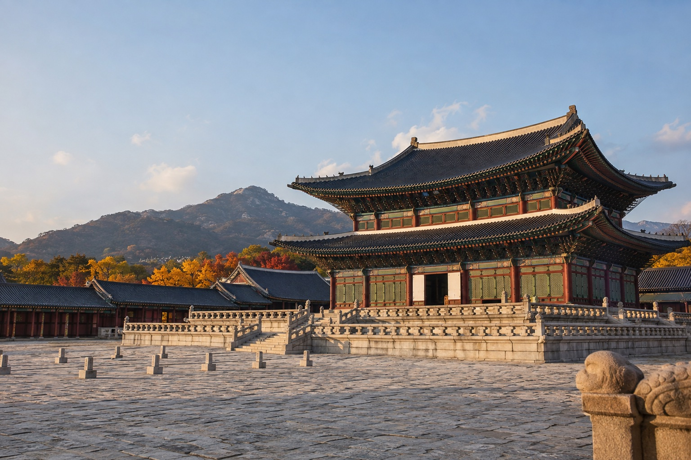
Start with the courtyards.
Gyeongbokgung was the first royal palace of the Joseon dynasty and remains its largest. The broad courtyards and layered rooflines offer a very different rhythm from the streets around them.
Give the small details some attention: the painted woodwork beneath the eaves, the repetition of the columns, and the way the roofs frame the sky. If you enjoy drawing or photography, choose a few details to study instead of rushing to see everything.
Plan your visit: Check the official listing for seasonal opening hours, closing days and guided tours before choosing a date.
Official visitor information — Visit Seoul ↗A little preparation, more time to look
Check the day before planning the details
Visit Seoul lists Tuesday as the regular closing day, with a different arrangement when a public holiday overlaps. Opening and last-entry times also change with the season. Check the current listing for your chosen date before arranging the rest of the day; arriving near closing leaves little time to explore.
Choose one detail to follow
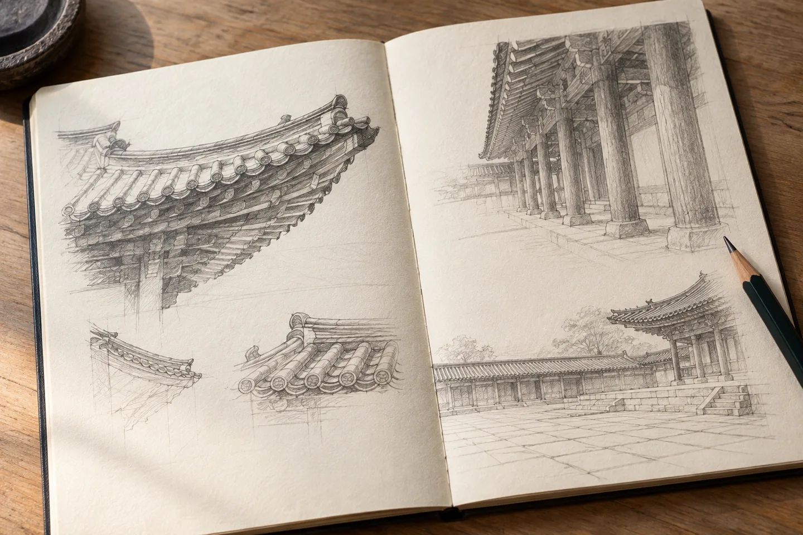
Try looking for one visual thread: the curve of a roof edge, the spacing between columns, or a patch of sky framed by timber. Compare it in two places before moving on. A short note or a simple sketch can help you remember what caught your attention. Keep the passage clear for other visitors while you pause.
Prepare for an unhurried outdoor visit
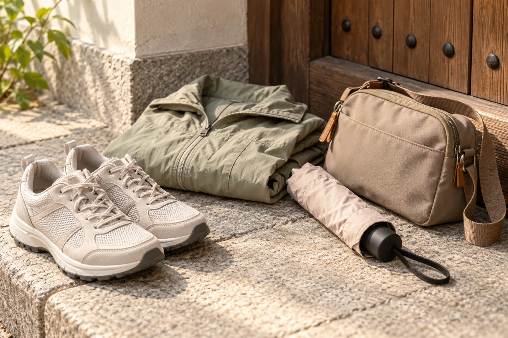
Wear shoes you already find comfortable and choose layers for the forecast on your visit date. Keep rain protection within reach and leave room for a break. If you plan to rent hanbok, ask about the return time and make sure the outfit works for the walking you intend to do.
Visitor information checked October 31, 2026 against Visit Seoul’s official palace listing, edited October 7, 2026. Observation and packing ideas are general suggestions. The illustrations do not document an actual visit or current site conditions.
YONGSAN
Art & craftsmanship
National Museum of Korea
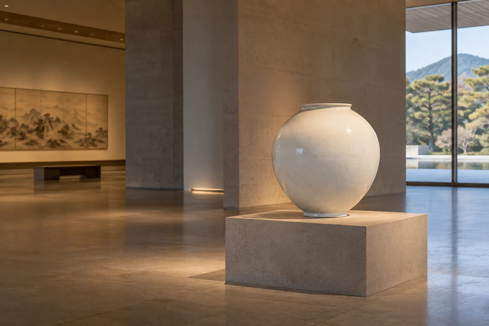
Take a closer look.
The National Museum of Korea in Yongsan introduces Korean history and culture through its collections. Ceramics, sculpture, painting and calligraphy make this a good stop for visitors interested in how things are made.
Pick a material or a subject that catches your eye and spend time with it. A ceramic silhouette, a carved fold or the spacing in a painting can be more memorable than trying to cover every gallery. An indoor museum visit also offers a useful change of pace during a busy city trip.
Plan your visit: Check the museum website for current exhibitions, access arrangements and opening information. Special exhibitions may have separate booking or ticket requirements.
Official visitor information — National Museum of Korea ↗A little preparation, a slower visit
Choose a small focus before you go

Choose one or two interests before setting out: pottery shapes, carved figures or painted lines, for example. Leave time to read labels and return to an object that catches your attention. This is a suggested way to pace your visit, not an official gallery route.
Keep your visit manageable
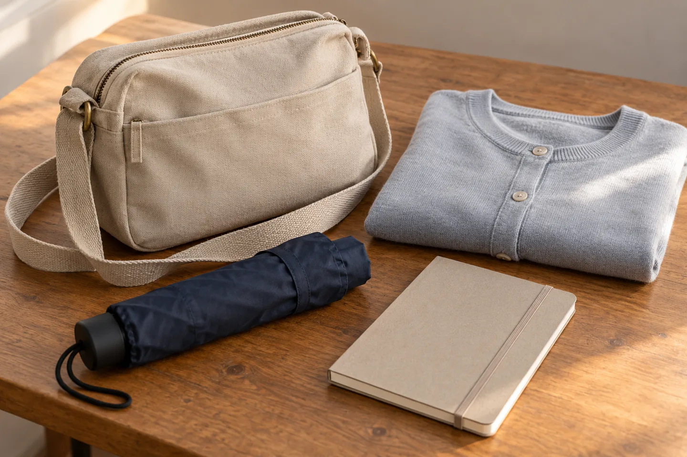
A small, manageable bag can make a long visit easier. Check the museum’s current guidance for storage and restricted items. Its visitor information lists lockers and coat storage; follow the on-site instructions rather than assuming every bag or item can enter a gallery.
Look first, then make a short note
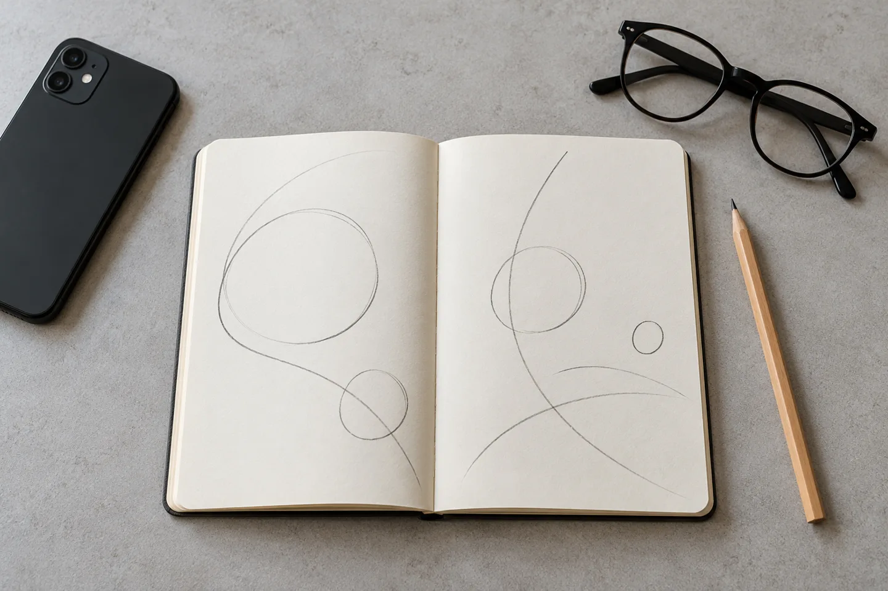
Try recording a few words about a shape, surface or colour you noticed. Keep phones silent and leave space for other visitors. The museum’s visitor tips prohibit flash, tripods, selfie sticks and gimbals; commercial photography requires advance written permission. Check any additional signs for the exhibition you enter.
Visitor guidance checked October 25, 2026. Plans and illustrations are general suggestions; use the museum’s current notices for your visit.
Visitor services and tips — National Museum of Korea ↗NAMSAN
Skyline & perspective
Namsan Seoul Tower
See how the city fits together.
Namsan Seoul Tower stands on Namsan, with panoramic views over Seoul. After time among buildings at street level, the view from above gives the city a different scale.
Consider a clear afternoon for the changing light, or an evening visit for the illuminated skyline. Visibility depends on the weather, so keep this part of your itinerary flexible. Choose an approach that suits your energy and allow time for the journey up.
Plan your visit: The tower observatory and cable car are separate attractions. Check their current hours, fares and transport information before you go.
Official visitor information — N Seoul Tower ↗Plan the journey as well as the view
Choose how to get up and back down
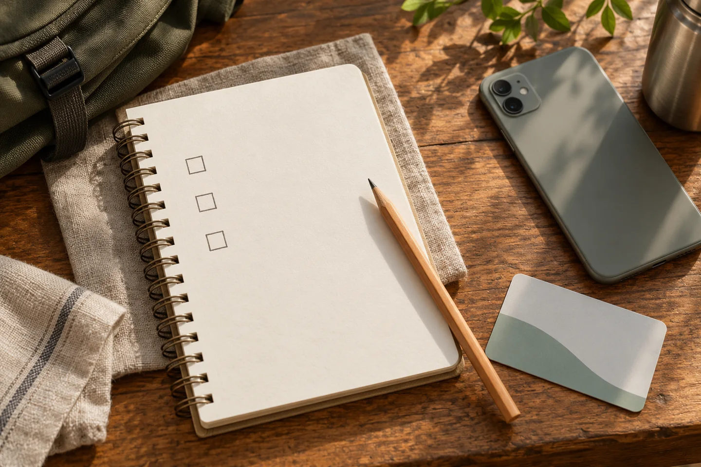
The tower’s transport guide lists the 01A and 01B Namsan circular buses and explains that general vehicle access is restricted. Check the current route and boarding point before leaving. If you prefer the cable car or a walk, plan the return journey too; reaching the hill and entering the observatory are separate parts of the outing.
Prepare for the walking you choose
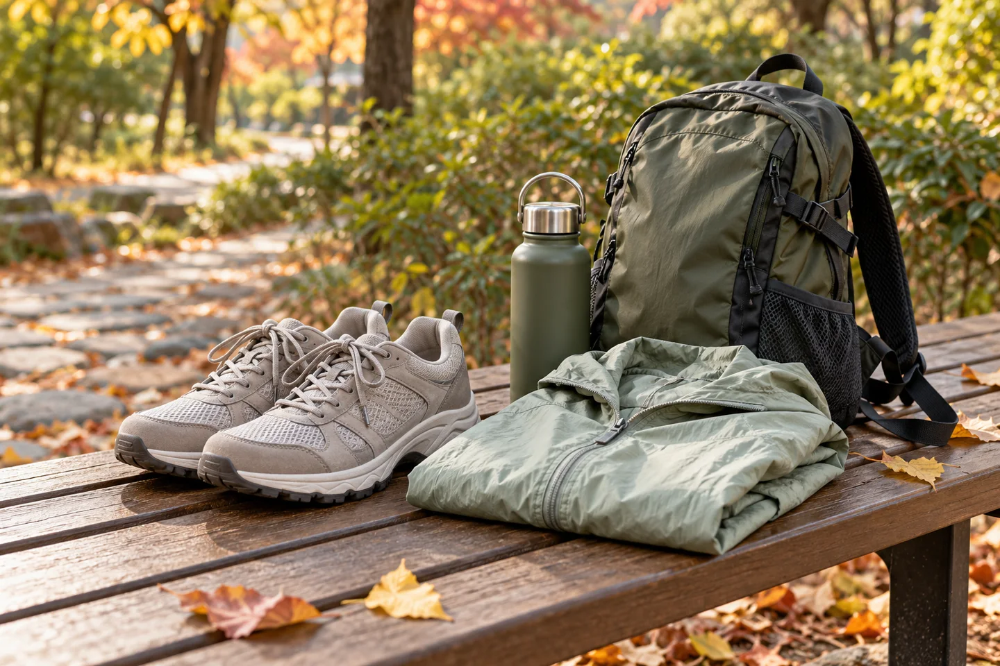
Wear shoes you already find comfortable and carry a layer suited to the forecast. Keep the bag manageable and allow yourself breaks. These are general preparation suggestions, not a claim about a particular trail’s difficulty or accessibility; check your chosen approach before committing to it.
Leave time to look, then take a photograph
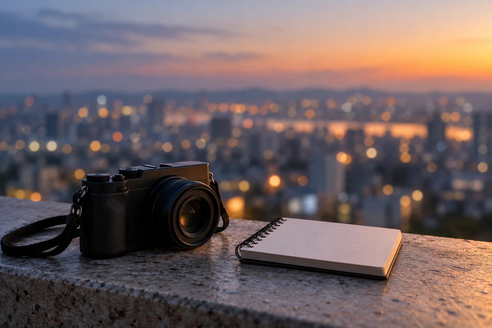
Let your eyes settle on the layers of buildings before reaching for a camera. A changing sky can make the same view feel different, but a clear sunset is never guaranteed. Check the observatory’s current opening and last-admission information, and leave enough time to travel back comfortably.
Transport and visitor-information pages checked October 27, 2026. Conditions and operating arrangements can change; these illustrations show planning ideas, not current site conditions.
Official transport guide — N Seoul Tower ↗Opening and last-admission information — N Seoul Tower ↗
AT THE TABLE
Food & small discoveries
A taste of Korea
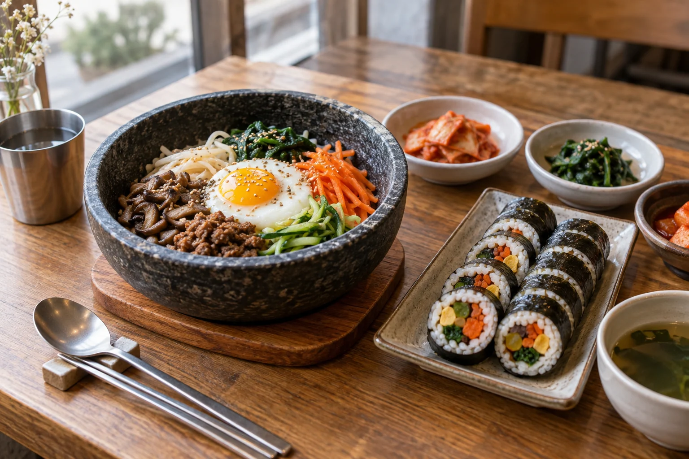
Start with a meal, not a checklist.
Bibimbap brings rice and a variety of toppings together in one bowl. Gimbap wraps rice and fillings in seaweed and is usually sliced into bite-sized pieces. Both offer an easy starting point for learning the names and flavors you enjoy.
Leave room in the day to explore a market or a small restaurant near the area you are already visiting. Look at the menu and prices before ordering, and ask about the ingredients or level of spice rather than relying on the picture alone.
A useful habit: If you have dietary requirements, confirm the fillings, sauces and broth with the restaurant. A vegetable-heavy dish is not automatically vegetarian.
Explore food and restaurants — Visit Seoul ↗Three snacks to recognize
Tteokbokki · rice cakes in sauce

Tteokbokki commonly pairs rice cakes with a gochujang-based sauce. Recipes vary, so ask about the sauce and spice level before choosing a portion.
Eomuk · fish cake skewers
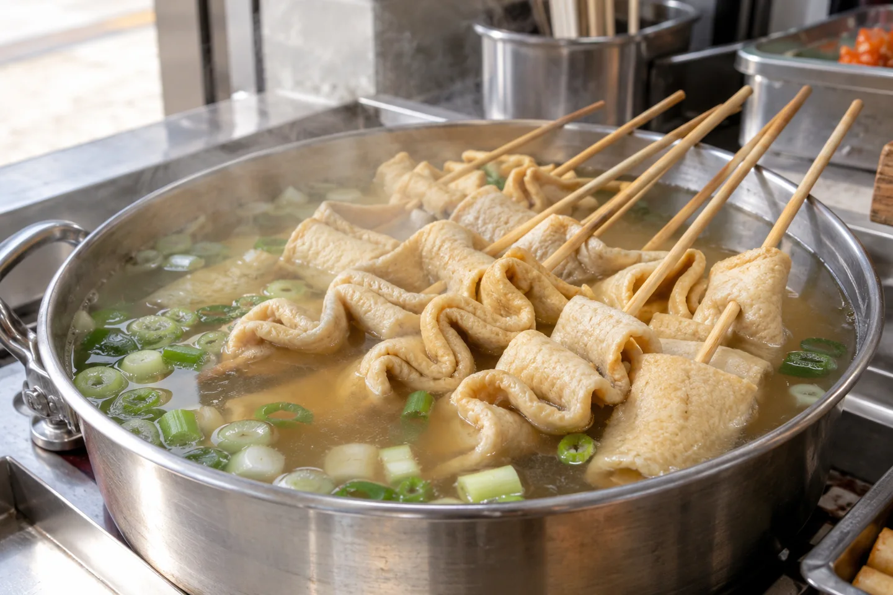
Eomuk is fish cake, often served on skewers in broth at bunsik stalls. Ask what is in the broth as well as the fish cakes if you need to check ingredients.
Hotteok · a filled griddlecake
A sweet hotteok often has a sugar filling with nuts, while other versions use different fillings. Check the filling before ordering rather than assuming every stall makes the same kind.
Food notes checked October 19, 2026 against the Korea Tourism Organization’s general food guide (page updated March 24, 2023). These are dish introductions, not current menus or prices.
Bunsik and street food — Visit Korea ↗TEXTURE & SILHOUETTE
Traditional & everyday clothing
Hanbok & everyday style
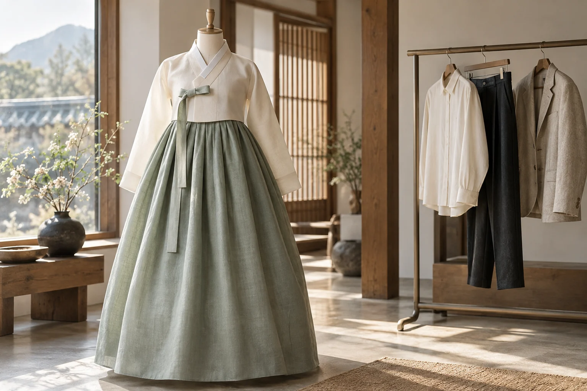
Two ways to look at Korean clothing.
Hanbok offers a chance to notice flowing silhouettes, fabric and color in a different way. If you would like to try it during a palace visit, compare rental options nearby and ask what is included, how long you can keep the outfit and when it must be returned.
For everyday style, give yourself time to browse rather than chasing a single trend. A well-cut shirt, a light jacket or a simple pair of trousers can be an enjoyable reminder of the trip. Check measurements, try on pieces where possible, and ask about the shop’s exchange policy before buying.
Before a hanbok outing: Choose comfortable shoes and check the weather. Confirm current palace admission rules directly; do not assume every rental or outfit qualifies for the same benefits.
Read about the hanbok experience — Visit Seoul ↗Look closer before choosing an outfit
The jacket and its ties

The jeogori is the jacket in a hanbok ensemble. Notice how the collar, sleeve and tying ribbon give the upper part of the outfit its shape. Proportions differ across styles and periods; one illustration cannot represent them all.
The shape of the skirt

A chima is a full skirt, while baji are trousers. Looking at the overall outline before the small decorations can help you compare outfits: the spread of the skirt and the length of the jacket change the balance of the silhouette.
A few questions at the fitting

Before leaving a rental shop, try a few comfortable steps and check the hem. Ask which accessories are included, where to leave your belongings, and the return time. Choose for the walking you plan to do as well as the photographs you hope to take.
Clothing terminology checked October 21, 2026 against Visit Seoul’s “The Hanbok” (edited June 22, 2022). Rental questions are general planning suggestions, not current shop terms.
Hanbok garments and background — Visit Seoul ↗BEFORE YOU PACK
Seasons & practical layers
Weather & what to wear
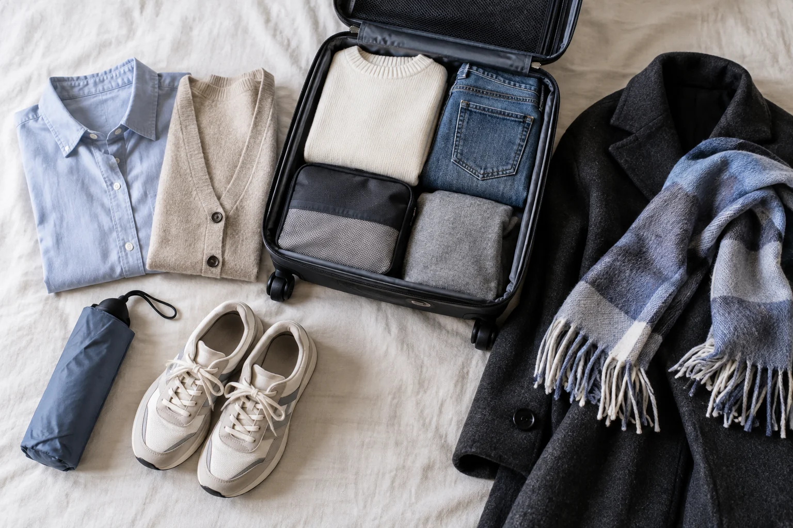
Pack for your dates, then check again.
Seoul has distinct seasons. Use the guide below as a packing starting point, then check the forecast for the actual days of your trip.
Spring · March–May
Bring layers and an outer jacket for cool mornings and evenings. Early spring can still feel cold.
Summer · June–August
Choose light, breathable clothing. Pack a compact umbrella or rain layer for humid, rainy weather.
Autumn · September–November
A shirt with a cardigan or jacket gives you options as the day cools. Add warmer layers later in the season.
Winter · December–February
Plan for a warm coat, insulating layers, a scarf and gloves. Choose shoes suited to cold or slippery days.
Check before heading out: Look at the daily high and low, rain and wind. This is general seasonal guidance, not a live weather forecast.
Seasonal climate information — Visit Korea ↗Check the latest forecast — Korea Meteorological Administration ↗
Three useful packing decisions
Choose layers you can combine

Start with pieces that work together: a shirt, a removable middle layer and an outer jacket. Adjust their warmth to your travel dates and the latest forecast. The outfit shown is an autumn packing example, not a complete winter wardrobe.
Keep rain protection within reach

A compact umbrella or a rain layer is easier to use when it is in your day bag rather than at the bottom of your suitcase. Check the forecast before a long outdoor walk, and leave room in your plans for an indoor stop if rain arrives.
Pack for the walking you plan to do

Choose shoes you already find comfortable and socks that suit them. Match your footwear to the route and conditions: a city stroll, a hill walk and a cold or slippery day call for different preparation. The picture is a general packing example.
Seasonal background rechecked October 23, 2026 with the Korea Tourism Organization. These are general packing suggestions; check a current forecast for your destination and dates.
Leave some space in the plan.
Choose a few things that fit your interests and the weather. Leave room for meals, travel between areas and whatever catches your attention along the way.
Sources reviewed October 6, 2026. Check current opening hours, prices, rental terms and forecasts before traveling. All twenty-four illustrations on this page are AI-generated, not documentary photographs.